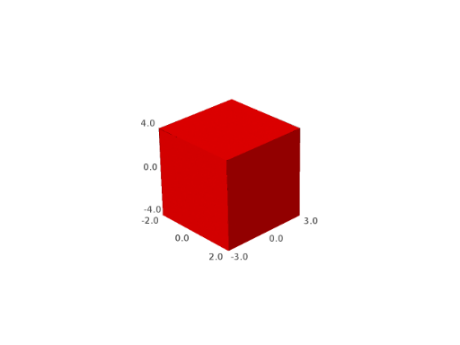
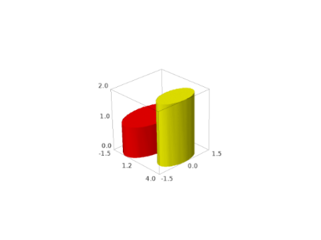
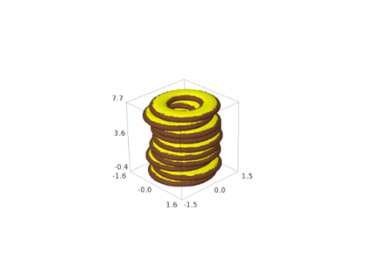
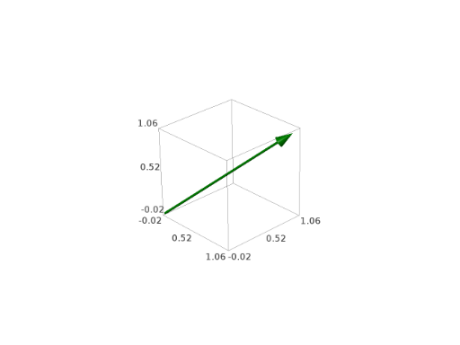

Basic objects such as Sphere, Box, Cone, etc.¶
AUTHORS:
Robert Bradshaw 2007-02: initial version
Robert Bradshaw 2007-08: obj/tachyon rendering, much updating
Robert Bradshaw 2007-08: cythonization
EXAMPLES:
sage: from sage.plot.plot3d.shapes import *
sage: S = Sphere(.5, color='yellow')
sage: S += Cone(.5, .5, color='red').translate(0,0,.3)
sage: S += Sphere(.1, color='white').translate(.45,-.1,.15) + Sphere(.05, color='black').translate(.51,-.1,.17)
sage: S += Sphere(.1, color='white').translate(.45, .1,.15) + Sphere(.05, color='black').translate(.51, .1,.17)
sage: S += Sphere(.1, color='yellow').translate(.5, 0, -.2)
sage: S.show()
sage: S.scale(1,1,2).show()

sage: from sage.plot.plot3d.shapes import *
sage: Torus(.7, .2, color=(0,.3,0)).show()
- class sage.plot.plot3d.shapes.Box(*size, **kwds)¶
Bases:
sage.plot.plot3d.index_face_set.IndexFaceSetReturn a box.
EXAMPLES:
sage: from sage.plot.plot3d.shapes import Box
A square black box:
sage: show(Box([1,1,1]), color='black')

A red rectangular box:
sage: show(Box([2,3,4], color="red"))
 A stack of boxes:
sage: show(sum([Box([2,3,1], color="red").translate((0,0,6*i)) for i in [0..3]]))

A sinusoidal stack of multicolored boxes:
sage: B = sum([Box([2,4,1/4], color=(i/4,i/5,1)).translate((sin(i),0,5-i)) for i in [0..20]]) sage: show(B, figsize=6)
- bounding_box()¶
EXAMPLES:
sage: from sage.plot.plot3d.shapes import Box sage: Box([1,2,3]).bounding_box() ((-1.0, -2.0, -3.0), (1.0, 2.0, 3.0))
- x3d_geometry()¶
EXAMPLES:
sage: from sage.plot.plot3d.shapes import Box sage: Box([1,2,1/4]).x3d_geometry() "<Box size='1.0 2.0 0.25'/>"
- sage.plot.plot3d.shapes.ColorCube(size, colors, opacity=1, **kwds)¶
Return a cube with given size and sides with given colors.
INPUT:
size– 3-tuple of sizes (same as for box and frame)colors– a list of either 3 or 6 colorsopacity– (default: 1) opacity of cube sides**kwds– passed to the face constructor
OUTPUT:
a 3d graphics object
EXAMPLES:
A color cube with translucent sides:
sage: from sage.plot.plot3d.shapes import ColorCube sage: c = ColorCube([1,2,3], ['red', 'blue', 'green', 'black', 'white', 'orange'], opacity=0.5) sage: c.show()

sage: list(c.texture_set())[0].opacity 0.5
If you omit the last 3 colors then the first three are repeated (with repeated colors on opposing faces):
sage: c = ColorCube([0.5,0.5,0.5], ['red', 'blue', 'green'])
- class sage.plot.plot3d.shapes.Cone¶
Bases:
sage.plot.plot3d.parametric_surface.ParametricSurfaceA cone, with base in the xy-plane pointing up the z-axis.
INPUT:
radius– positive real numberheight– positive real numberclosed– whether or not to include the base (defaultTrue)**kwds– passed to the ParametricSurface constructor
EXAMPLES:
sage: from sage.plot.plot3d.shapes import Cone sage: c = Cone(3/2, 1, color='red') + Cone(1, 2, color='yellow').translate(3, 0, 0) sage: c.show(aspect_ratio=1)

We may omit the base:
sage: Cone(1, 1, closed=False) Graphics3d Object
A spiky plot of the sine function:
sage: sum(Cone(.1, sin(n), color='yellow').translate(n, sin(n), 0) for n in [0..10, step=.1]) Graphics3d Object

A Christmas tree:
sage: T = sum(Cone(exp(-n/5), 4/3*exp(-n/5), color=(0, .5, 0)).translate(0, 0, -3*exp(-n/5)) for n in [1..7]) sage: T += Cone(1/8, 1, color='brown').translate(0, 0, -3) sage: T.show(aspect_ratio=1, frame=False)

- get_grid(ds)¶
Return the grid on which to evaluate this parametric surface.
EXAMPLES:
sage: from sage.plot.plot3d.shapes import Cone sage: Cone(1, 3, closed=True).get_grid(100) ([1, 0, -1], [0.0, 1.2566..., 2.5132..., 3.7699..., 5.0265..., 0.0]) sage: Cone(1, 3, closed=False).get_grid(100) ([1, 0], [0.0, 1.2566..., 2.5132..., 3.7699..., 5.0265..., 0.0]) sage: len(Cone(1, 3).get_grid(.001)[1]) 38
- x3d_geometry()¶
EXAMPLES:
sage: from sage.plot.plot3d.shapes import Cone sage: Cone(1, 3).x3d_geometry() "<Cone bottomRadius='1.0' height='3.0'/>"
- class sage.plot.plot3d.shapes.Cylinder¶
Bases:
sage.plot.plot3d.parametric_surface.ParametricSurfaceA cone, with base in the xy-plane pointing up the z-axis.
INPUT:
radius– positive real numberheight– positive real numberclosed– whether or not to include the ends (defaultTrue)**kwds– passed to the ParametricSurface constructor
EXAMPLES:
sage: from sage.plot.plot3d.shapes import Cylinder sage: c = Cylinder(3/2, 1, color='red') + Cylinder(1, 2, color='yellow').translate(3, 0, 0) sage: c.show(aspect_ratio=1)
 We may omit the base:
sage: Cylinder(1, 1, closed=False) Graphics3d Object

Some gears:
sage: G = Cylinder(1, .5) + Cylinder(.25, 3).translate(0, 0, -3) sage: G += sum(Cylinder(.2, 1).translate(cos(2*pi*n/9), sin(2*pi*n/9), 0) for n in [1..9]) sage: G += G.translate(2.3, 0, -.5) sage: G += G.translate(3.5, 2, -1) sage: G.show(aspect_ratio=1, frame=False)

- bounding_box()¶
EXAMPLES:
sage: from sage.plot.plot3d.shapes import Cylinder sage: Cylinder(1, 2).bounding_box() ((-1.0, -1.0, 0), (1.0, 1.0, 2.0))
- get_endpoints(transform=None)¶
EXAMPLES:
sage: from sage.plot.plot3d.shapes import Cylinder sage: from sage.plot.plot3d.transform import Transformation sage: Cylinder(1, 5).get_endpoints() ((0, 0, 0), (0, 0, 5.0)) sage: Cylinder(1, 5).get_endpoints(Transformation(trans=(1,2,3), scale=(2,2,2))) ((1.0, 2.0, 3.0), (1.0, 2.0, 13.0))
- get_grid(ds)¶
Return the grid on which to evaluate this parametric surface.
EXAMPLES:
sage: from sage.plot.plot3d.shapes import Cylinder sage: Cylinder(1, 3, closed=True).get_grid(100) ([2, 1, -1, -2], [0.0, 1.2566..., 2.5132..., 3.7699..., 5.0265..., 0.0]) sage: Cylinder(1, 3, closed=False).get_grid(100) ([1, -1], [0.0, 1.2566..., 2.5132..., 3.7699..., 5.0265..., 0.0]) sage: len(Cylinder(1, 3).get_grid(.001)[1]) 38
- get_radius(transform=None)¶
EXAMPLES:
sage: from sage.plot.plot3d.shapes import Cylinder sage: from sage.plot.plot3d.transform import Transformation sage: Cylinder(3, 1).get_radius() 3.0 sage: Cylinder(3, 1).get_radius(Transformation(trans=(1,2,3), scale=(2,2,2))) 6.0
- jmol_repr(render_params)¶
EXAMPLES:
sage: from sage.plot.plot3d.shapes import Cylinder
For thin cylinders, lines are used:
sage: C = Cylinder(.1, 4) sage: C.jmol_repr(C.default_render_params()) ['\ndraw line_1 width 0.1 {0 0 0} {0 0 4.0}\ncolor $line_1 [102,102,255]\n']
For anything larger, we use a pmesh:
sage: C = Cylinder(3, 1, closed=False) sage: C.jmol_repr(C.testing_render_params()) ['pmesh obj_1 "obj_1.pmesh"\ncolor pmesh [102,102,255]']
- tachyon_repr(render_params)¶
EXAMPLES:
sage: from sage.plot.plot3d.shapes import Cylinder sage: C = Cylinder(1/2, 4, closed=False) sage: C.tachyon_repr(C.default_render_params()) 'FCylinder\n Base 0 0 0\n Apex 0 0 4.0\n Rad 0.5\n texture... ' sage: C = Cylinder(1, 2) sage: C.tachyon_repr(C.default_render_params()) ['Ring Center 0 0 0 Normal 0 0 1 Inner 0 Outer 1.0 texture...', 'FCylinder\n Base 0 0 0\n Apex 0 0 2.0\n Rad 1.0\n texture... ', 'Ring Center 0 0 2.0 Normal 0 0 1 Inner 0 Outer 1.0 texture...']
- x3d_geometry()¶
EXAMPLES:
sage: from sage.plot.plot3d.shapes import Cylinder sage: Cylinder(1, 2).x3d_geometry() "<Cylinder radius='1.0' height='2.0'/>"
- sage.plot.plot3d.shapes.LineSegment(start, end, thickness=1, radius=None, **kwds)¶
Create a line segment, which is drawn as a cylinder from start to end with radius
radius.EXAMPLES:
sage: from sage.plot.plot3d.shapes import LineSegment, Sphere sage: P = (0,0,0.1) sage: Q = (0.5,0.6,0.7) sage: S = Sphere(.2, color='red').translate(P) sage: S += Sphere(.2, color='blue').translate(Q) sage: S += LineSegment(P, Q, .05, color='black') sage: S.show()
sage: S = Sphere(.1, color='red').translate(P) sage: S += Sphere(.1, color='blue').translate(Q) sage: S += LineSegment(P, Q, .15, color='black') sage: S.show()

AUTHOR:
Robert Bradshaw
- class sage.plot.plot3d.shapes.Sphere¶
Bases:
sage.plot.plot3d.parametric_surface.ParametricSurfaceThis class represents a sphere centered at the origin.
EXAMPLES:
sage: from sage.plot.plot3d.shapes import Sphere sage: Sphere(3) Graphics3d Object
Plot with aspect_ratio=1 to see it unsquashed:
sage: S = Sphere(3, color='blue') + Sphere(2, color='red').translate(0,3,0) sage: S.show(aspect_ratio=1)
Scale to get an ellipsoid:
sage: S = Sphere(1).scale(1,2,1/2) sage: S.show(aspect_ratio=1)
- bounding_box()¶
Return the bounding box that contains this sphere.
EXAMPLES:
sage: from sage.plot.plot3d.shapes import Sphere sage: Sphere(3).bounding_box() ((-3.0, -3.0, -3.0), (3.0, 3.0, 3.0))
- get_grid(ds)¶
Return the range of variables to be evaluated on to render as a parametric surface.
EXAMPLES:
sage: from sage.plot.plot3d.shapes import Sphere sage: Sphere(1).get_grid(100) ([-10.0, ..., 10.0], [0.0, ..., 3.141592653589793, ..., 0.0])
- jmol_repr(render_params)¶
EXAMPLES:
sage: from sage.plot.plot3d.shapes import Sphere
Jmol has native code for handling spheres:
sage: S = Sphere(2) sage: S.jmol_repr(S.default_render_params()) ['isosurface sphere_1 center {0 0 0} sphere 2.0\ncolor isosurface [102,102,255]'] sage: S.translate(10, 100, 1000).jmol_repr(S.default_render_params()) [['isosurface sphere_1 center {10.0 100.0 1000.0} sphere 2.0\ncolor isosurface [102,102,255]']]
It cannot natively handle ellipsoids:
sage: Sphere(1).scale(2, 3, 4).jmol_repr(S.testing_render_params()) [['pmesh obj_2 "obj_2.pmesh"\ncolor pmesh [102,102,255]']]
Small spheres need extra hints to render well:
sage: Sphere(.01).jmol_repr(S.default_render_params()) ['isosurface sphere_1 resolution 100 center {0 0 0} sphere 0.01\ncolor isosurface [102,102,255]']
- tachyon_repr(render_params)¶
Tachyon can natively handle spheres. Ellipsoids rendering is done as a parametric surface.
EXAMPLES:
sage: from sage.plot.plot3d.shapes import Sphere sage: S = Sphere(2) sage: S.tachyon_repr(S.default_render_params()) 'Sphere center 0 0 0 Rad 2.0 texture...' sage: S.translate(1, 2, 3).scale(3).tachyon_repr(S.default_render_params()) [['Sphere center 3.0 6.0 9.0 Rad 6.0 texture...']] sage: S.scale(1,1/2,1/4).tachyon_repr(S.default_render_params()) [['TRI V0 0 0 -0.5 V1 0.308116 0.0271646 -0.493844 V2 0.312869 0 -0.493844', 'texture...', ... 'TRI V0 0.308116 -0.0271646 0.493844 V1 0.312869 0 0.493844 V2 0 0 0.5', 'texture...']]
- x3d_geometry()¶
EXAMPLES:
sage: from sage.plot.plot3d.shapes import Sphere sage: Sphere(12).x3d_geometry() "<Sphere radius='12.0'/>"
- class sage.plot.plot3d.shapes.Text(string, **kwds)¶
Bases:
sage.plot.plot3d.base.PrimitiveObjectA text label attached to a point in 3d space. It always starts at the origin, translate it to move it elsewhere.
EXAMPLES:
sage: from sage.plot.plot3d.shapes import Text sage: Text("Just a lonely label.") Graphics3d Object
sage: pts = [(RealField(10)^3).random_element() for k in range(20)] sage: sum(Text(str(P)).translate(P) for P in pts) Graphics3d Object

- bounding_box()¶
Text labels have no extent:
sage: from sage.plot.plot3d.shapes import Text sage: Text("Hi").bounding_box() ((0, 0, 0), (0, 0, 0))
- jmol_repr(render_params)¶
Labels in jmol must be attached to atoms.
EXAMPLES:
sage: from sage.plot.plot3d.shapes import Text sage: T = Text("Hi") sage: T.jmol_repr(T.testing_render_params()) ['select atomno = 1', 'color atom [102,102,255]', 'label "Hi"'] sage: T = Text("Hi").translate(-1, 0, 0) + Text("Bye").translate(1, 0, 0) sage: T.jmol_repr(T.testing_render_params()) [[['select atomno = 1', 'color atom [102,102,255]', 'label "Hi"']], [['select atomno = 2', 'color atom [102,102,255]', 'label "Bye"']]]
- obj_repr(render_params)¶
The obj file format does not support text strings:
sage: from sage.plot.plot3d.shapes import Text sage: Text("Hi").obj_repr(None) ''
- tachyon_repr(render_params)¶
Strings are not yet supported in Tachyon, so we ignore them for now:
sage: from sage.plot.plot3d.shapes import Text sage: Text("Hi").tachyon_repr(None) ''
- threejs_repr(render_params)¶
Return representation of the text suitable for plotting in three.js.
EXAMPLES:
sage: T = text3d("Hi", (1, 2, 3), color='red', fontfamily='serif', ....: fontweight='bold', fontstyle='italic', fontsize=20, ....: opacity=0.5) sage: T.threejs_repr(T.default_render_params()) [('text', {'color': '#ff0000', 'fontFamily': ['serif'], 'fontSize': 20.0, 'fontStyle': 'italic', 'fontWeight': 'bold', 'opacity': 0.5, 'text': 'Hi', 'x': 1.0, 'y': 2.0, 'z': 3.0})]
- x3d_geometry()¶
EXAMPLES:
sage: from sage.plot.plot3d.shapes import Text sage: Text("Hi").x3d_geometry() "<Text string='Hi' solid='true'/>"
- class sage.plot.plot3d.shapes.Torus¶
Bases:
sage.plot.plot3d.parametric_surface.ParametricSurfaceINPUT:
R – (default: 1) outer radius
r – (default: .3) inner radius
OUTPUT:
a 3d torus
EXAMPLES:
sage: from sage.plot.plot3d.shapes import Torus sage: Torus(1, .2).show(aspect_ratio=1)

sage: Torus(1, .7, color='red').show(aspect_ratio=1)

A rubberband ball:
sage: show(sum([Torus(1, .03, color=(1, t/30.0, 0)).rotate((1,1,1),t) for t in range(30)]))
Mmm… doughnuts:
sage: D = Torus(1, .4, color=(.5, .3, .2)) + Torus(1, .3, color='yellow').translate(0, 0, .15) sage: G = sum(D.translate(RDF.random_element(-.2, .2), RDF.random_element(-.2, .2), .8*t) for t in range(10)) sage: G.show(aspect_ratio=1, frame=False)
 - get_grid(ds)¶
Return the range of variables to be evaluated on to render as a parametric surface.
EXAMPLES:
sage: from sage.plot.plot3d.shapes import Torus sage: Torus(2, 1).get_grid(100) ([0.0, -1.047..., -3.141592653589793, ..., 0.0], [0.0, 1.047..., 3.141592653589793, ..., 0.0])
- sage.plot.plot3d.shapes.arrow3d(start, end, width=1, radius=None, head_radius=None, head_len=None, **kwds)¶
Create a 3d arrow.
INPUT:
start – (x,y,z) point; the starting point of the arrow
end – (x,y,z) point; the end point
width – (default: 1); how wide the arrow is
radius – (default: width/50.0) the radius of the arrow
head_radius – (default: 3*radius); radius of arrow head
head_len – (default: 3*head_radius); len of arrow head
EXAMPLES:
The default arrow:
sage: arrow3d((0,0,0), (1,1,1), 1) Graphics3d Object
A fat arrow:
sage: arrow3d((0,0,0), (1,1,1), radius=0.1) Graphics3d Object

A green arrow:
sage: arrow3d((0,0,0), (1,1,1), color='green') Graphics3d Object
 A fat arrow head:
sage: arrow3d((2,1,0), (1,1,1), color='green', head_radius=0.3, aspect_ratio=[1,1,1]) Graphics3d Object
Many arrows arranged in a circle (flying spears?):
sage: sum([arrow3d((cos(t),sin(t),0),(cos(t),sin(t),1)) for t in [0,0.3,..,2*pi]]) Graphics3d Object

Change the width of the arrow. (Note: for an arrow that scales with zoom, please consider the
line3dfunction with the optionarrow_head=True):sage: arrow3d((0,0,0), (1,1,1), width=1) Graphics3d Object

- sage.plot.plot3d.shapes.validate_frame_size(size)¶
Check that the input is an iterable of length 3 with all elements nonnegative and coercible to floats.
EXAMPLES:
sage: from sage.plot.plot3d.shapes import validate_frame_size sage: validate_frame_size([3,2,1]) [3.0, 2.0, 1.0]